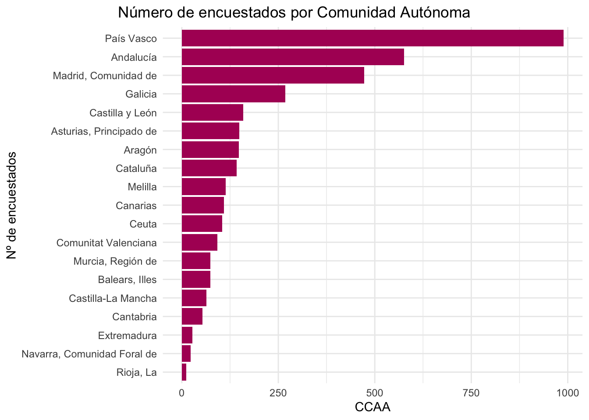
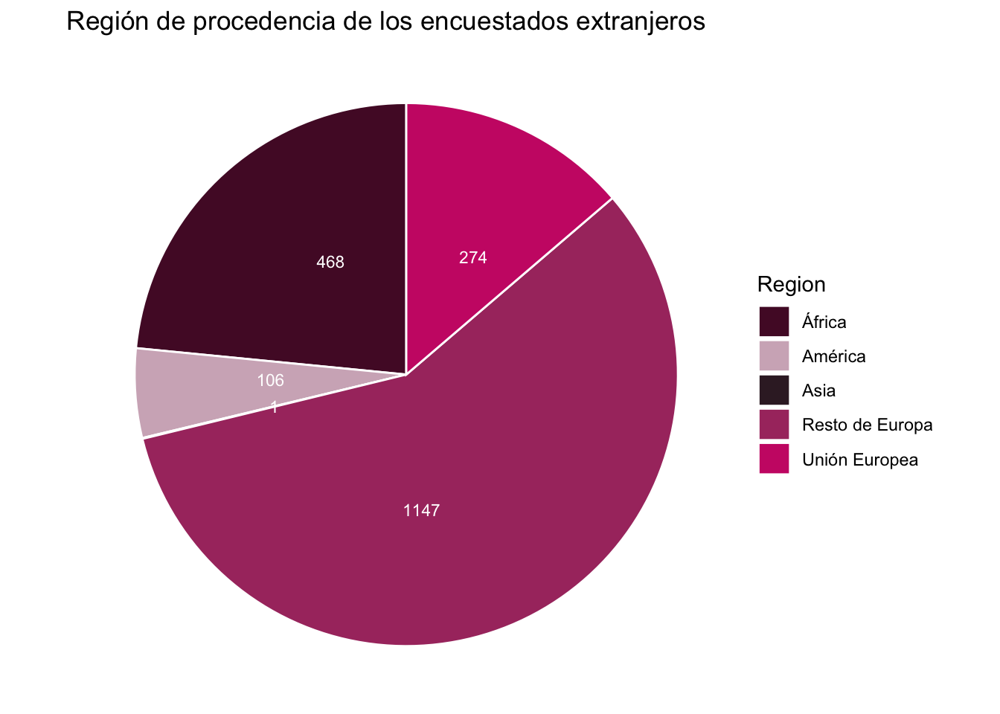
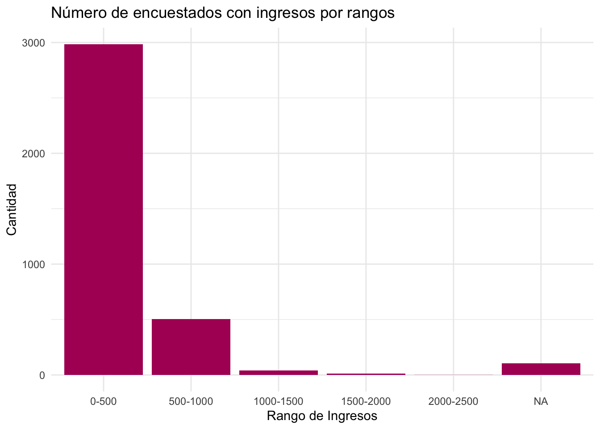

library(tidyr)
library(ggplot2)
library(openxlsx)
library(dplyr)Perfil del sinhogarismo con microdatos del INE (2022)
Perfil de sinhogarismo con microdatos del INE (2022)
Análisis realizado como Trabajo de Fin de Curso para el curso de R de la Universidad de Salamanca, en la edición (2023-2024).
Para este análisis hemos seleccionado los datos de la Encuesta sobre las personas sin hogar de 2022, realizado por el Instituto Nacional de Estadística (INE) y accesibles en su propia página web.
Introducción
Al descargar los microdatos de esta encuesta, nos encontramos con una carpeta con archivos de diferentes formatos: STATA, SPSS, SAS, R y CSV. Además, también tenemos un archivo en xlxs con el diseño de la encuesta (“dr_EPSH_2022.xlsx”).
Para este trabajo vamos a utilizar directamente el archivo en formato R, aunque los resultados están codificados. Los códigos, en este caso, se encuentran en el archivo xlsx de diseño de encuesta, que iremos convirtiendo en CSV y uniendo con nuestra base de datos principal. Todos los archivos con los que vamos a trabajar estarán alojados en un repositorio público de Github.
Análisis de datos
Para comenzar, cargamos las librerias que vamos a utilizar:
A continuación, cargamos nuestro archivo “EPSH_2022.RData”, con el que vamos a trabajar. Al cargarlo, vemos que tiene dos bases de datos: una llamada ‘Microdatos’ y otra ‘Metadatos’. Seleccionamos los ‘Microdatos’ , que es con el que vamos a trabajar, le cambiamos el nombre y lo convertimos en tibble.
load(url("https://github.com/malvarezdelvayo/cursoR/raw/main/EPSH_2022.RData"))
datostotales <- as_tibble(Microdatos)Ahora vamos a explorar los datos que contiene ‘datos totales’ para hacernos una idea:
class(datostotales)
summary(datostotales)
nrow(datostotales)Con el nrow ya sabemos cuántos encuestados hay, pero vamos a utilizar la columna del identificador único (‘NIDENT’) para asegurarnos que no haya duplicados:
length(datostotales$NIDENT)[1] 3650El total de encuestados es de 3650 personas. A continuación vamos a averiguar un poco más sobre el perfil de estos encuestados. Por ejemplo, la edad media, los cuantiles, la edad máxima y la mínima. Para ello, utilizaremos la columna ‘Edad’.
edad <- datostotales$Edad
mean(edad)[1] 42.85205quantile(edad) 0% 25% 50% 75% 100%
18 29 44 55 86 min(edad)[1] 18max(edad)[1] 86La edad media de los encuestados es de 42 años y la mediana de 44. El encuestado de menor edad era de 18 años mientras que el mayor era de 86 años. También queremos saber el sexo, por lo que vamos a utilizar la columna ‘B1’. Aquí, en lugar de tener “hombre” o “mujer”, tenemos los números 1 y 6, por lo que vamos a hacer una conversión. Después, veremos la cantidad de encuestados por sexo y el porcentaje de hombres y mujeres del total.
datostotales <- datostotales %>%
mutate(B1 = case_when(
B1 == 1 ~ "hombre",
B1 == 6 ~ "mujer",
TRUE ~ as.character(B1)
))
#Sacamos los totales:
tabla_sexos <- table(datostotales$B1)
tabla_sexos
hombre mujer
2744 906 #Sacamos los porcentajes:
porcentaje_hombres <- prop.table(tabla_sexos)["hombre"] * 100
print(porcentaje_hombres) hombre
75.17808 porcentaje_mujeres <- prop.table(tabla_sexos)["mujer"] * 100
print(porcentaje_mujeres) mujer
24.82192 Haciendo ese cambio, ya nos resultan más intuitivos los resultados. Ahora sabemos que del total de encuestados, 2744 son hombres y 906 son mujeres. Los hombres suponen un 75,17% del total de los encuestados y las mujeres un 24,82%. También queremos saber la edad media de los encuestados para ver si hay diferencias entre los sexos:
edadmedia <- datostotales %>%
select(Edad, B1) %>%
group_by(B1) %>%
summarise(avg = mean(Edad))
print(edadmedia)# A tibble: 2 × 2
B1 avg
<chr> <dbl>
1 hombre 42.3
2 mujer 44.5Con esos resultados vemos que las mujeres encuestadas, de media, son algo mayores que los hombres: 44 años ellas y 42 ellos. En los microdatos también podemos ver la comunidad autónoma donde reside el encuestado. Para esto, utilizaremos la columna ‘CCAA’ aunque, una vez más, vendrá con códigos en lugar de nombres. Así, hemos creado un CSV con la correspondencia entre los códigos y los nombres de las CCAA y vamos a meter esta correspondencia en la base de datos princial utilizando un left_joint:
nombresCCAA <- read.csv(url("https://raw.githubusercontent.com/malvarezdelvayo/cursoR/main/tccaa.csv"))
#Pasamos las columnas por las que queremos unir las tablas al mismo formato:
datostotales$CCAA <- as.numeric(datostotales$CCAA)
nombresCCAA$codigo <- as.numeric(nombresCCAA$codigo)
#Renombramos las columnas para que tengan el mismo nombre y el left joint sea fácil:
datostotales <- datostotales %>%
rename(codCCAA = CCAA)
nombresCCAA <- nombresCCAA %>%
rename(codCCAA = codigo)
#Hacemos un left joint para que aparezcan los nombres de las CCAA equivalentes a cada código en la bbdd
datostotales <- left_join(datostotales, nombresCCAA, by = 'codCCAA') Vamos a mostrar esta relación de encuestados por CCAA en un gráfico de barras:
#Primero seleccionamos los datos que queremos mostrar
encuestadosCCAA <- data.frame(table(datostotales$CCAA))
ggplot(data = encuestadosCCAA, aes(x = reorder(Var1, Freq), y = Freq)) +
geom_bar(stat = "identity", fill ='#AF1964') +
labs(y = "CCAA", x = "Nº de encuestados") +
coord_flip() +
theme(axis.text.y = element_text(angle = 45, hjust = 1)) +
theme_minimal() +
ggtitle("Número de encuestados por Comunidad Autónoma") +
theme(plot.title = element_text(hjust = 0.5)) +
theme(plot.title.position = "plot")
# Hemos reordenado el gráfico para que aparezca de mayor número a menor número de encuestadosQueremos saber también la nacionalidad de los encuestados. Para esto, utilizaremos la columna ‘B3’. Aquí, al ser tres variables solo las posibles (1, 2 y 3 que corresponden con nacionalidad “española”, “extranjera” o “ambas”) vamos a meter las correspondencias a mano como lo hicimos con el sexo de los encuestados. Después, haremos los porcentajes de las variables y sacaremos la edad media por nacionalidad:
datostotales <- datostotales %>%
mutate(B3 = case_when(
B3 == 1 ~ "española",
B3 == 2 ~ "extranjera",
B3 == 3 ~ "ambas",
TRUE ~ as.character(B3)
))
#Hacemos los porcentajes:
resultadosNAC <- table(datostotales$B3)
porcentajeextranjeros <- (resultadosNAC["extranjera"]/sum(resultadosNAC)) * 100
porcentajeespañoles <- (resultadosNAC["española"]/sum(resultadosNAC)) * 100
porcentajeambos <- (resultadosNAC["ambas"]/sum(resultadosNAC)) * 100
porcentajesNAC <- c(print(porcentajeextranjeros), print(porcentajeespañoles), print(porcentajeambos))extranjera
54.68493
española
43.12329
ambas
2.191781 #Edad media por nacionalidad:
edad_media_por_nacionalidad <- datostotales %>%
group_by(B3, B1) %>%
summarise(edad_media = mean(Edad, na.rm = TRUE))`summarise()` has grouped output by 'B3'. You can override using the `.groups`
argument.print(edad_media_por_nacionalidad)# A tibble: 6 × 3
# Groups: B3 [3]
B3 B1 edad_media
<chr> <chr> <dbl>
1 ambas hombre 50.7
2 ambas mujer 46.9
3 española hombre 51.3
4 española mujer 48.5
5 extranjera hombre 35.6
6 extranjera mujer 40.2Con esos resultados vemos que entre los encuestados hay más población extranjera que española (54,7% versus 43,1%). Además, podemos ver que la media de edad de los hombres extranjeros es la más baja (35 años) y la de hombres españoles la más alta (51 años). Ahora, además, también vamos a comprobar de qué continente vienen los que no son extranjeros:
#Hacemos el cambio de códigos a nombre de las variables:
datostotales <- datostotales %>%
mutate(B3_LIT_COD = case_when(
B3_LIT_COD == 1 ~ "Unión Europea",
B3_LIT_COD == 2 ~ "Resto de Europa",
B3_LIT_COD == 3 ~ "África",
B3_LIT_COD == 4 ~ "América",
B3_LIT_COD == 5 ~ "Asia",
B3_LIT_COD == 6 ~ "Oceanía",
B3_LIT_COD == 9 ~ "NS/NR",
TRUE ~ as.character(B3_LIT_COD)
))
#Vamos a visualizarlo:
#Hacemos el filtro de nacionalidad extranjera en la columna B3
regionEXT <- datostotales %>%
filter(B3 == "extranjera") %>%
select(B3_LIT_COD)
tabla_region <- table(regionEXT$B3_LIT_COD)
#Convertirmos la tabla en un data frame
df_tabla_region <- as.data.frame(tabla_region)
#Renombramos las columnas del data frame
names(df_tabla_region) <- c("Region", "Frecuencia")
#Hacemos un pie chart (aunque sabemos su mala fama)
ggplot(df_tabla_region, aes(x = "", y = Frecuencia, fill = Region)) +
geom_bar(stat = "identity", width = 1, color = "white") +
ggtitle("Región de procedencia de los encuestados extranjeros") +
geom_text(aes(label = Frecuencia), position = position_stack(vjust = 0.6), size = 3.0, color ='white') +
coord_polar("y", start = 0) +
scale_fill_manual(values = c("#541030", "#D1B3C1", "#39222D", "#A9386E","#CB2574")) +
theme_void()
Podemos observar en el gráfico que la mayoría de encuestados extranjeros vienen del resto de Europa, seguidos por África y la Unión Europea. A continuación, queremos seguir explorando los datos, especialmente los que hacen referencia a los ingresos de los encuestados. Por esta razón, decidimos volver a cambiar los códigos de las variables por palabras, para que sea más fácil de entender. Vamos a hacer estos cambios en las columnas H1 - H3_17:
columnas_a_transformar <- c(
paste0("H1_", 1:3),
paste0("H2_", 4:12),
paste0("H3_", 13:17)
)
for (col in columnas_a_transformar) {
datostotales <- datostotales %>%
mutate(!!sym(col) := case_when(
.data[[col]] == 1 ~ "Sí",
.data[[col]] == 6 ~ "No",
.data[[col]] == 9 ~ "NS/NR",
TRUE ~ as.character(.data[[col]])
))
}Con estos datos transformados, podemos ver, por ejemplo, cuántos de los encuestados cobraron el Ingreso Mínimo Vital (columna H2_5) o cuántos cobraron la Renta Mínima de Reinserción (columna H2_4):
# Seleccionar las columnas H2_5 y H2_4 y asignar a la variable ingresos
ingresos <- datostotales %>% select(H2_5, H2_4)
# Calcular el conteo de "sí" y "no" en las columnas H2_5 y H2_4
conteo_si_no <- apply(ingresos, 2, table)
print(conteo_si_no) H2_5 H2_4
No 3439 3275
NS/NR 7 7
Sí 204 368Solo 204 encuestados recibieron el Ingreso Mínimo Vital y 368 recibieron la Renta Mínima de Reinserción. También queremos ver el total de ingresos recibidos, que es una variable recogida en la columna ‘H5’ en euros:
mean(datostotales$H5)[1] 523.2485quantile(datostotales$H5) 0% 25% 50% 75% 100%
0 0 100 460 9999 min(datostotales$H5)[1] 0max(datostotales$H5)[1] 9999Lo media de ingresos recibidos por los encuestados era de 523,2 euros, aunque la mediana baja a 100 euros. Veámos ahora con un gráfico cómo se distribuyen los ingresos por rangos:
#Hacemos los rangos con los que vamos a mostrar el gráfico:
rangos <- seq(0, 9999, by = 500)
etiquetas <- paste0(rangos[-length(rangos)], "-", rangos[-1])
datostotalesrangos <- cut(datostotales$H5, breaks = rangos, labels = etiquetas, include.lowest = TRUE)
#Creamos el dataframe que queremos mostrar con los rangos y los totales de ingresos:
datostotalesrangos <- as.data.frame(datostotalesrangos)
datostotalesrangos <- cbind(datostotalesrangos, H5 = datostotales$H5)
datostotalesrangos <- datostotalesrangos %>%
rename(rangos = datostotalesrangos)
#Hacemos la suma por rango de los ingresos:
datostotalesrangos <- datostotalesrangos %>%
group_by(rangos) %>%
summarise(Cantidad = n()) %>%
arrange(desc(Cantidad))
#Hacemos la visualización
ggplot(datostotalesrangos, aes(x = rangos, y = Cantidad)) +
geom_bar(stat = "identity", fill = "#AF1964") +
labs(x = "Rango de Ingresos", y = "Cantidad") +
ggtitle("Número de encuestados con ingresos por rangos") +
theme(plot.title = element_text(hjust = 0.5)) +
theme_minimal()
También queremos saber cómo estos ingresos se reparten por sexo:
eurosingresoSEXO <- datostotales %>%
select(B1, H5) %>%
group_by(B1) %>%
summarise(avg = mean(H5))
head(eurosingresoSEXO)# A tibble: 2 × 2
B1 avg
<chr> <dbl>
1 hombre 482.
2 mujer 648.Sabemos que, de media, las mujeres encuestadas ingresan más que los hombres (647 euros versus 482 euros).
Conclusiones
Con este análisis podemos hacer un perfil genérico del encuestado en la Encuesta sobre las personas sin hogar de 2022. Se trata de un hombre de 42 años que vive en el País Vasco, extranjero que viene de algún otro país europeo, que no cobra el Ingreso Mínimo Vital ni la Renta Mínima de Reinserción y que sus ingresos totales son de 500 euros o menos.